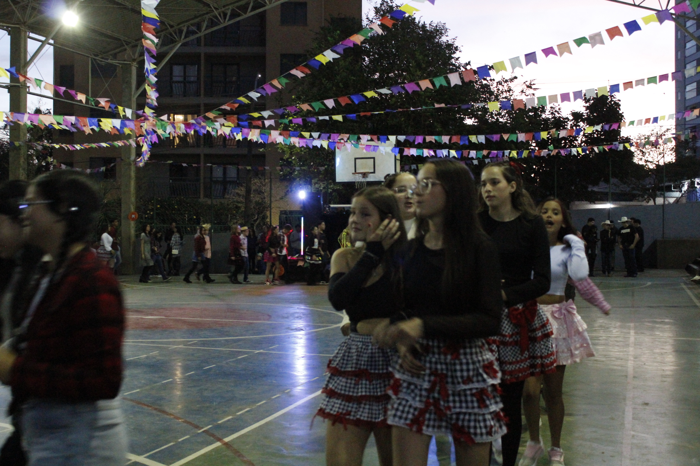
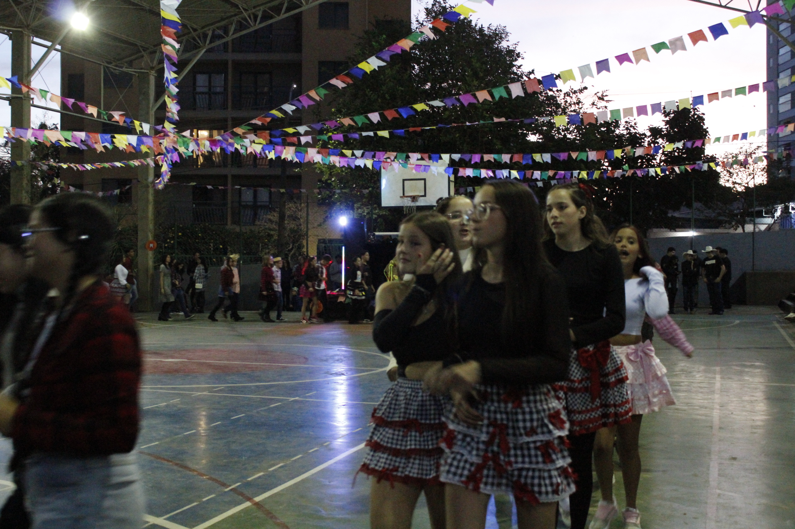

Bem-vindos às nossas aulas de Robótica! Nesta página vocês vão encontrar as atividades da nossa sequência com o micro:bit. Cada atividade deve ser programada na plataforma MakeCode e, depois, testada no seu micro:bit real. Usem a criatividade, prestem atenção aos comandos e aproveitem essa jornada com a tecnologia!
Atividade 1: Termômetro com Botão A
Este projeto mostra a temperatura do micro:bit usando o sensor de temperatura integrado. Quando o botão A é pressionado, o micro:bit mostra a temperatura em graus Celsius no visor de LED.
Leve o micro:bit para locais quentes e frios e veja como as leituras mudam.
Acesse a atividade no site oficial
Atividade 2: Emblema de Emoções com Toque
Ao pressionar o botão A, o micro:bit exibe uma carinha feliz. Com o botão B, ele mostra uma carinha triste. Ao tocar no logotipo dourado sensível ao toque, aparece uma carinha surpresa. Um projeto divertido para explorar saídas visuais e entradas variadas.
Acesse a atividade no site oficial
Atividade 3: Contador de Passos
Transforme seu micro:bit em um pedômetro. Sempre que você sacudir o micro:bit (simulando um passo), o número de passos é incrementado e exibido no visor LED. Uma excelente forma de entender o uso de variáveis e sensores de movimento.
Acesse a atividade no site oficial